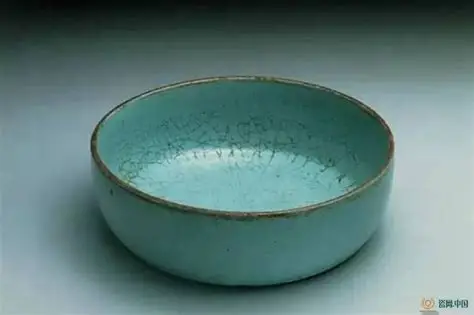

艺术价值
汝窑以其独特的天青釉色、温润如玉的质感和精美的造型，代表了中国古代陶瓷艺术的最高成就，被誉为"青瓷之冠"。
汝窑，中国宋代五大名窑之首，因产于汝州（今河南省宝丰县）而得名。汝窑创烧于北宋晚期，约在宋哲宗元祐元年（1086年）至宋徽宗崇宁五年（1106年）间，前后仅约二十年。虽然烧造时间短暂，但汝窑以其独特的天青釉色和精湛的工艺，成为中国陶瓷史上的巅峰之作。
从宋代宫廷御用到当代艺术珍品
北宋哲宗年间，汝窑在汝州清凉寺一带创烧。工匠们经过反复试验，终于烧制出独特的天青釉色，开创了中国青瓷的新纪元。

宋徽宗赵佶酷爱汝瓷，将汝窑定为宫廷御用瓷器。"雨过天青云破处，这般颜色做将来"的诗句，正是徽宗对汝瓷釉色的赞美。
靖康之变后，北宋灭亡，汝窑窑火随之熄灭。由于烧造时间短暂，传世汝瓷极为稀少，现存不足百件，弥足珍贵。

考古学家在河南省宝丰县清凉寺村发现汝窑遗址，出土大量汝瓷残片和窑具，为研究汝窑提供了珍贵的实物资料。

经过几代陶瓷艺人的不懈努力，汝窑烧制技艺得以恢复。现代汝瓷在继承传统的基础上不断创新，焕发出新的生机。

汝瓷烧制技艺被列入国家级非物质文化遗产名录，标志着这一千年技艺得到国家层面的保护与传承。

汝窑在中国陶瓷史上的重要地位
汝窑以其独特的天青釉色、温润如玉的质感和精美的造型，代表了中国古代陶瓷艺术的最高成就，被誉为"青瓷之冠"。
汝窑是研究宋代宫廷文化、审美趣味和制瓷技术的重要实物资料，对了解中国古代社会具有重要的历史价值。

由于存世量极少，汝窑真品在国际拍卖市场上屡创天价，是收藏家梦寐以求的珍品，具有极高的收藏投资价值。